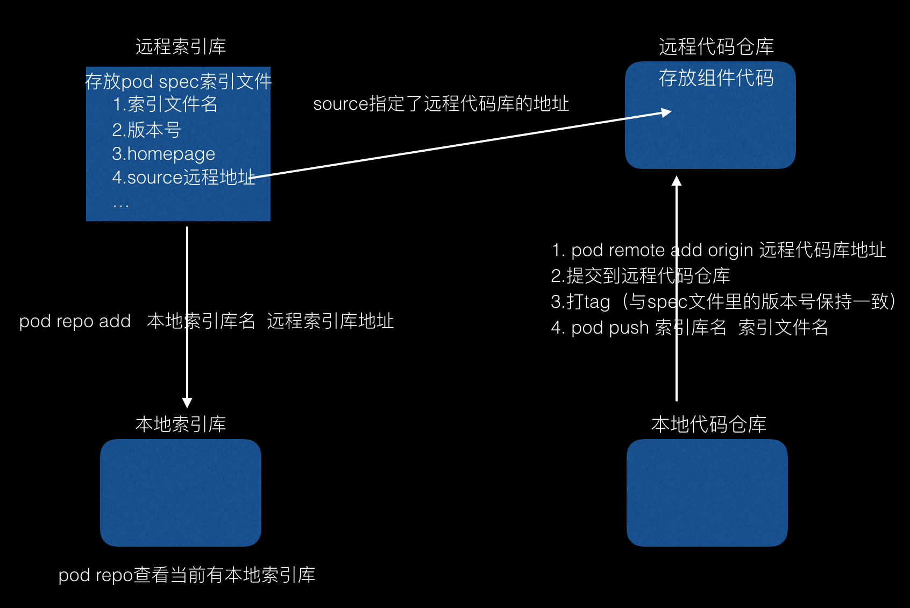
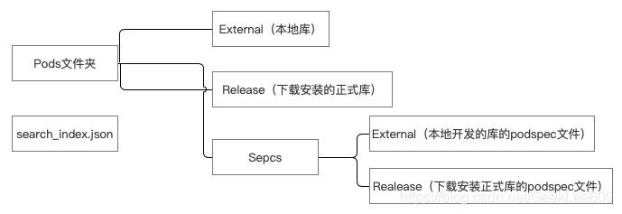

CocoaPods 系列博客
CocoaPods-总览
CocoaPods-项目使用
CocoaPods-封装自己的 Pod 库
基本概念
CocoaPods 是一个 ruby 工具，Mac 下优秀的第三方包管理工具,帮助管理和集成,自动更新网络上的第三方类库.方便了配置。CocoaPods 默认只能管理基于 git 管理的代码，如果要使用 svn 或者 mercurial 管理代码，则需要安装一些插件(cocoapods-repo-svn).我们通过 git 上的插件把私有代码通过 svn 下载到本地的私有仓库.这样委托 pod 来管理.
远程索引库，本地索引库，远程代码库、本地代码库相关概念如下：

远程索引库地址为https://github.com/CocoaPods/Specs.git
本地索引库存储位置 ~/.cocoapods，缓存存储位置：~/Library/Caches/CocoaPods
缓存存储目录结构如下：

搜索并安装 Cocoapods 上的某一个库，大致执行流程为：
- 从 search_index.json 中找到该库对应版本的 podspec 文件并将其下载到 Specs/Release 文件夹中
- 根据该库的 podspec 文件中的 source 中的 git 地址，将对应版本的库下载到 Pods/Release 文件夹中
将本地自己开发的库推送到 Cocoapods 仓库时，大致执行流程为：
- 执行 pod spec lint XXX.podspec 时，如果没有依赖其他库时，会在 Specs/External 文件中该库生成对应版本的 podsepc 文件，并对其文件名进行 hash
- 将该 podspec 文件中对应的库下载到 Pods/External 文件夹中
- 如果发布的库依赖其他 Cocoapods 上发布的库时，会将依赖库的 podspec 文件下载到 Specs/Release 文件夹中，依赖的库下载到 Pods/Release 文件夹中
Cocoapods 1.7.2 就可以使用 CDN 的方式下载索引库，需要在 Podfile 文件里加上source 'https://cdn.cocoapods.org/'，而到 Cocoapods 1.8.0 时，直接将 CDN 作为默认仓库来源。使用 CDN 分发，直接找到第三方库的 spec 地址，直接下载，不需要全量下载远程索引库到本地。
原理
当所有的依赖库都下载完后，Cocoapods 会将所有的依赖库都放到另一个名为 Pods 的项目中，然后让主项目依赖 Pods 项目。这样，源码管理工作都从主目录移到了 Pods 项目中。
动态库形式，工程变动如下：
- 在 General -> Linked Frameworks and Libraries 中添加了 Pods_test.framework 的依赖
- Build Settings -> Other Linker Flags 中添加了 -framework “AFNetworking”
- Build Settings -> RunPath Search Paths 中添加了 @executable_path/Frameworks
- Build Settings -> Other C Flags 添加 -iquote “$CONFIGURATION_BUILD_DIR/AFNetworking.framework/Headers” 和 Other C++ Flags 添加 $(OTHER_CFLAGS)，也就是说，跟随 Other C Flags 配置
- Build Settings -> Preprocessor Macros 添加 COCOAPODS=1
- Build Settings -> User-Defined -> MTL_ENABLE_DEBUG_INFO PODS_FRAMEWORK_BUILD_PATH PODS_ROOT 三个变量
- Build Phases -> Embed Pods Frameworks 添加 “${SRCROOT}/Pods/Target Support Files/Pods-test/Pods-test-frameworks.sh” // 静态库不会生成该文件
- Build Phases -> Copy Pods Resources 添加 “${SRCROOT}/Pods/Target Support Files/Pods-test/Pods-test-resources.sh” // 如果三方库中没有资源文件，则不会生成该文件
两个 sh 文件实际上就是将封装通用架构动态库文件和将动态库复制到 bundle 指定目录下。
如果是静态库方式引入，Pods 项目最终会编译成为一个名为 libPods-项目名称.a 的文件，主项目只要依赖这个.a 文件即可；
如果是以动态库形式引入三方库，项目会依赖一个名为 Pods_项目名称.framework 的文件，该文件是一个静态库，只是起到一个集合的作用，实际的二进制代码还是放置在各个动态库之中。
安装及使用
CocoaPods 是用 ruby 语言写的，可以使用 ruby 语言的包管理器 gem 进行安装，如果没有 gem 环境，还需先安装 gem 环境。
1 | sudo gem install cocoapods |
- 进入到项目根目录，执行
pod init命令，该命令会生成 Podfile 文件，开发者就可以编辑该文件内容了 - 编辑 Podfile 文件后执行
pod install命令，命令执行完成后，会生成 ProjectName.xcworkspace、Podfile.lock、Pods 等文件。 - 不再通过 ProjectName.xcodeproj 打开工程，而是使用 ProjectName.xcworkspace
pod 命令集锦
1 | // 查看本地索引库列表 |
pod 命令选项
1 | // 跳过更新podspec索引 |
工具链
ruby：brew install rbenv
rvm/rbenv：使用这个安装指定ruby版本。rbenv install 2.7.0
gem：ruby环境下的包
Bundler：gem包管理器，bundle init生成一个Gemfile文件，描述gem及其版本，Cocoapods就是其下一个普通的gem。写完之后使用bundle install
Cocoapods：不再使用pod install，而是使用bundle exec pod install
推荐阅读冬瓜写的Cocoapods历险记